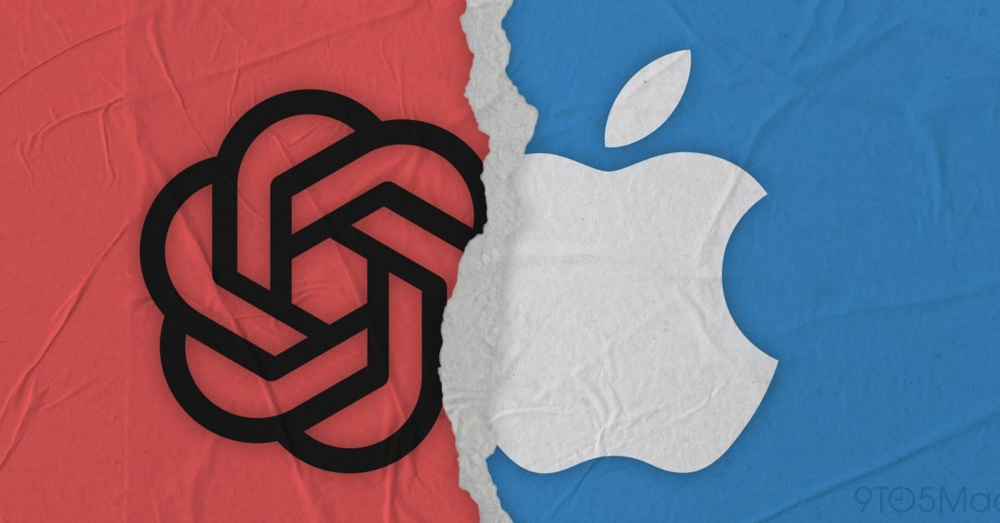
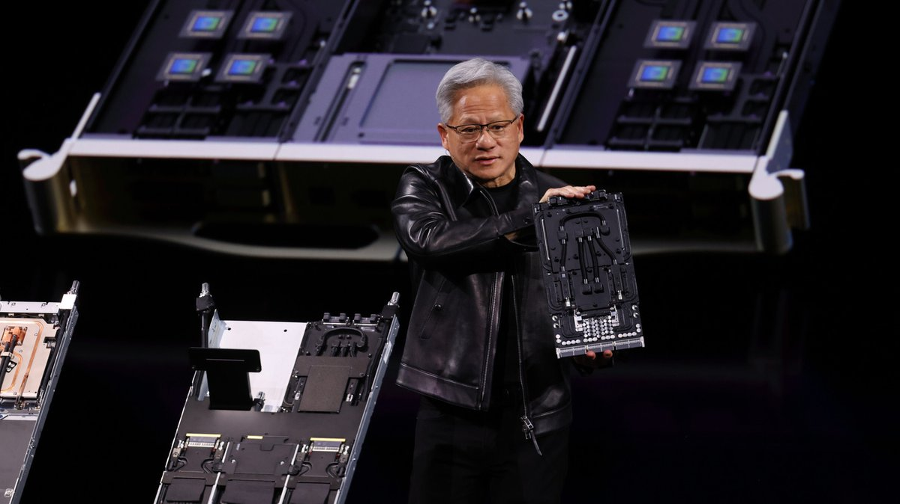
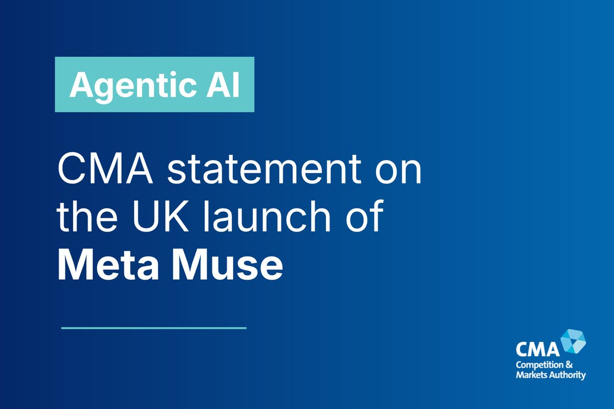
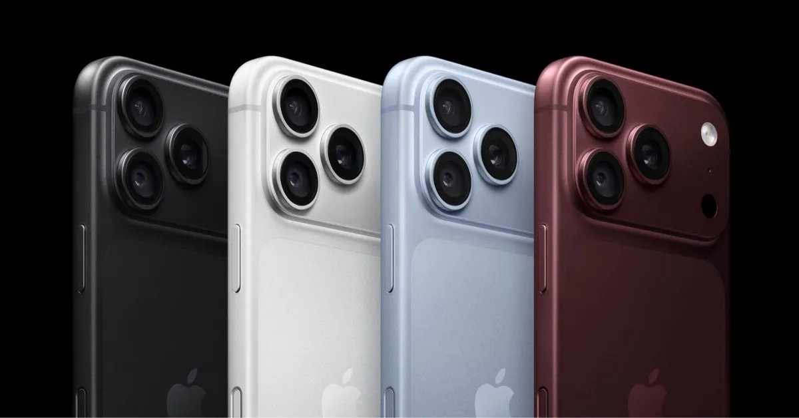
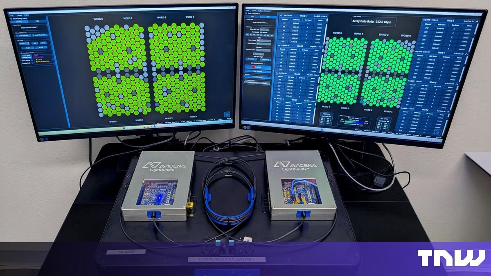
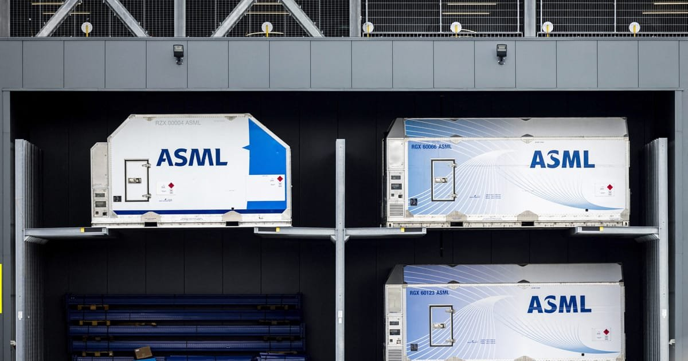
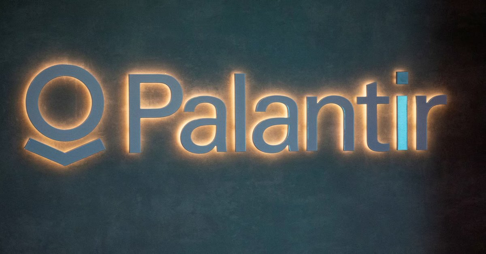

路透社
從蘋果轉到 OpenAI 的員工（路透引述反訴）
400人
路透寫，已有四百名員工從蘋果轉到OpenAI。這是報道引述的數字，用來呈現雙方互控的背景，不是已判決的結論。
效力：路透引述，不是本報統計，也不是法庭認定。
2026年11月28日 · 星期六科技要聞
OpenAI週五對蘋果提出反訴，指回流員工帶走未上市裝置機密，並脅迫共用供應商；蘋果稱這是轉移視線，原案據報明年七月開審。彭博根據中國監管申報的序號，在上海數據中心找到未獲對華出口許可的Blackwell機架，其中一套被拿去抵押貸款。路透引述知情人士，黑客入侵美國空軍旗艦雲平台Cloud One，範圍與是否失竊尚未確定。WhatsApp宣布將在應用內出售旅行電子SIM卡。The Verge動手試Android的Create My Widget：即時巴士到站做不到，許多元件其實只是Gemini捷徑。
人物：Kara Swisher
這是雙方互控竊密的反訴，不是已經判決的結果。蘋果七月已先起訴OpenAI及兩名前員工；原案據報明年七月開審。供應商被指改開夜班，亦須分源呈現為指控與否認。 路透社；並參 9to5Mac、《金融時報》

這不是人才流動的民事糾紛。這是一場用僱傭合約和供應商名單，把下一台裝置圍起來的權力遊戲。誰能叫金屬加工線改開夜班，誰就還在主導誰准把產品做出來。
據路透社，OpenAI於十一月二十七日對蘋果提出反訴，指控其竊取商業機密，並阻撓供應商為未上市的人工智能裝置工作。蘋果在七月已先起訴OpenAI及前員工Tang Yew Tan、Chang Liu，指硬體機密被帶到OpenAI；OpenAI否認竊密。路透引述反訴書指，一名曾在OpenAI任職約六個月的前蘋果員工，接觸新裝置與硬體路線圖後再被聘回。OpenAI在呈件中寫：「以時間點來看，現在顯得竊取那些文件，可能正是他加入OpenAI的原因。」蘋果否認利用這名回流員工取得機密，也否認壓制競爭，並稱反訴是「轉移視線」。
據9to5Mac轉述，該人被指把逾一百份機密檔案發到個人帳戶，包括設計、測試數據與供應商資料；OpenAI相信其後應蘋果要求，在七月向亞太區營運高層簡報。反訴又指，一家兩家共用的供應商在蘋果反對同區或同時段加工後，把OpenAI的金屬表面處理改到夜班；另一家製造商則稱因蘋果的威脅而無法進行原定工作。呈件還指控蘋果鼓勵員工用個人iCloud處理公事，再以個人裝置上的檔案追緝轉投對手的人。
路透寫，已有四百名員工從蘋果轉到OpenAI。Tan曾是任職蘋果二十四年的產品設計副總裁。蘋果對9to5Mac說，本案關乎蓄意竊取未發布技術的機密，反訴是要令人忽略其訴訟實質，且OpenAI已被命令停止使用蘋果機密。原案據報定於二零二七年七月十九日開審。兩個陣營都在控告對方偷竊。要看的不是聲明誰比較痛心，是誰還能叫供應商把線關掉。
路透社
從蘋果轉到 OpenAI 的員工（路透引述反訴）
400人
路透寫，已有四百名員工從蘋果轉到OpenAI。這是報道引述的數字，用來呈現雙方互控的背景，不是已判決的結論。
效力：路透引述，不是本報統計，也不是法庭認定。
9to5Mac 轉述反訴
被指發到個人帳戶的機密檔案
逾100份
據9to5Mac轉述，該回流員工被指把逾一百份機密檔案發到個人帳戶，包括設計、測試數據與供應商資料；OpenAI相信其後應蘋果要求，在七月向亞太區營運高層簡報。
效力：9to5Mac 轉述呈件內容，不是已證明的事實。
9to5Mac 轉述反訴
共用供應商被指改開夜班
夜班
反訴又指，一家兩家共用的供應商在蘋果反對同區或同時段加工後，把OpenAI的金屬表面處理改到夜班；另一家製造商則稱因蘋果的威脅而無法進行原定工作。蘋果否認壓制競爭。
效力：這是反訴指控與蘋果否認，必須分源呈現，不是已認定的脅迫事實。
9to5Mac 轉述
原案據報開審日期
2027年7月19日
蘋果七月已先起訴OpenAI及前員工Tang Yew Tan、Chang Liu。原案據報定於二零二七年七月十九日開審，也就是明年七月。蘋果稱反訴是「轉移視線」，且OpenAI已被命令停止使用蘋果機密。
效力：反訴不是已判決；開審日期為報道所稱，不是已經宣判。
來源：路透社（11月27日）；9to5Mac（11月27日，含蘋果聲明與《金融時報》轉述）。圖源：同類相關圖，非該則新聞原圖。9to5Mac（蘋果與 OpenAI 對峙示意，非法庭現場）
人物：Chris Miller
貸款約一千四百萬美元。彭博根據中國監管申報的序號，在上海數據中心找到未獲對華出口許可的Blackwell機架。彭博沒有證據顯示 Megaspeed 直接轉運。這不是昨日東南亞停運的同一則宣布。 Engadget（轉述彭博）；並參 The Verge

出口管制不是新聞稿。它是序號、重量，和一張貸款抵押清單。那些按美國規則不該出現在中國的機架，已經被寫進上海的監管申報，還拿去向銀行借錢。
據Engadget轉述彭博，兩家公司向中國監管機構提交的文件，提到上海「長江三角洲項目」出現GB300 NVL72與GB200伺服器機架；這兩類Blackwell系統輸往中國須取得許可。其中上海朔曜把一套GB300 NVL72抵押給上海創新銀行，貸款約一千四百萬美元。Engadget寫，單套機架含七十二顆Blackwell Ultra圖形處理器與三十六顆Grace處理器，重量約三千三百磅。彭博指出，黃仁勳曾聲稱這種機架大到難以走私。彭博把這套GB300的序號輸入公開保固資料庫，部分追溯至台灣技嘉；技嘉拒絕說明最初買家，只稱交易遵守當時法規與內部合規要求。
The Verge同日轉述彭博稱，這些晶片已安裝在至少兩座與Megaspeed有關連的數據中心。上海朔曜曾稱自己是該公司服務商，但把關係限於「普通商業合作」。彭博寫明，沒有證據顯示Megaspeed直接把晶片轉運到該中心；該公司否認不當行為。美國司法部正在調查Megaspeed是否違反出口規則。英偉達未即時回覆Engadget。彭博還在同一項目找到同樣須許可才能對華出口的Hopper世代伺服器。
軟件簡報改變不了物理事實：機架有重量，序號有出處，銀行要抵押品。昨日被報道暫停向東南亞四國出貨，是合規評估；今日見報的申報文件，是已經落地的硬體。黃仁勳定於十二月三日在國會公開作證。問題不再是規則寫得嚴不嚴，是三千三百磅的機架究竟走了哪一條供應鏈。
中國監管申報，經彭博，再經 Engadget 轉述
上海見到、輸往中國須取得許可的機架
GB300 NVL72
與 GB200
兩家公司向中國監管機構提交的文件，提到上海「長江三角洲項目」出現GB300 NVL72與GB200伺服器機架。The Verge同日轉述，這些晶片已安裝在至少兩座與Megaspeed有關連的數據中心。彭博還在同一項目找到同樣須許可才能對華出口的Hopper世代伺服器。
效力：彭博根據監管申報與轉述，不是本報去過現場。
Engadget 轉述彭博
上海朔曜把一套 GB300 NVL72 拿去抵押的貸款
約1400萬美元
貸款約一千四百萬美元。不要自行換算成未核對的人民幣整數。
效力：Engadget 轉述彭博；金額保留「約一千四百萬美元」。
Engadget 轉述彭博
單套 GB300 NVL72 機架的重量與處理器
約3300磅
Engadget寫，單套機架含七十二顆Blackwell Ultra圖形處理器與三十六顆Grace處理器，重量約三千三百磅。彭博指出，黃仁勳曾聲稱這種機架大到難以走私。
效力：報道轉述的規格與重量，須保留。
彭博保固資料庫，經 Engadget 轉述
機架序號的出處
部分追溯
至技嘉
彭博把這套GB300的序號輸入公開保固資料庫，部分追溯至台灣技嘉；技嘉拒絕說明最初買家，只稱交易遵守當時法規與內部合規要求。序號必須保留為「部分追溯」，不是全部已查清的供應鏈。
效力：彭博查核結果，技嘉未透露買家。
彭博，經 The Verge／Engadget 轉述
與 Megaspeed 的關係
沒有直接轉運證據
彭博沒有證據顯示 Megaspeed 直接轉運。上海朔曜曾稱自己是該公司服務商，但把關係限於「普通商業合作」。該公司否認不當行為。美國司法部正在調查Megaspeed是否違反出口規則。這不是昨日被報道暫停向東南亞四國出貨的同一則宣布。
效力：必須保留「沒有證據顯示直接轉運」這句限定；司法部仍在調查，不是已定罪。
來源：Engadget（11月27日，轉述彭博）；The Verge（11月27日，轉述彭博）；彭博原文（付費牆，本報以已打開的轉述核對）。圖源：同類相關圖，非該則新聞原圖。Sean Gallup / Getty Images，經 Engadget（非上海機房現場）
人物：Margrethe Vestager
全球最多人使用的即時通訊應用，不是在加一則旅行提示。它要在你已經離不開的對話窗口裡，賣掉連線本身。當看門人同時出售管道，市集就變成櫃檯。
據WhatsApp十一月二十六日官方網誌，該應用將讓用戶在國際旅行時，只需幾下點擊、不必離開應用，便可購買並安裝僅提供數據的電子SIM卡，落地後仍用原本電話號碼繼續使用WhatsApp。官方用語是「會像發訊息一樣不費力」。合作對象包括Jio、Smart Axiata、Smart Communications、Verizon及其他電子SIM與電訊夥伴，並稱「即將在部分國家」推出。沒有公布日期、國家名單、價格或裝置要求。The Verge十一月二十七日寫，它將面對專門的電子SIM應用、信用卡、網絡銀行甚至瀏覽器的競爭。
競爭名義上存在，預設路徑卻在WhatsApp裡面。這款應用已經承載登機證、接機協調和報平安；現在它要把流動數據做成應用內結帳。身份仍綁在同一個電話號碼、同一套帳戶上。這不是一家新電訊商在對等貨架上賣卡，是已經掌握對話入口的平台，把連線服務捆進自己的介面。歐洲把這類平台定為看門人，正是因為預設選項在主導應用裡，並不是一個可以自由走開的市場。
沒有價格、沒有時間表，並不讓這項捆綁變得比較無害。它只是把關鍵條款留到上線以後。看門人一旦開始賣管道，監管要問的不是旅遊是否更方便，而是用戶還能否在應用之外，用同樣低的摩擦取得連線，而不必把更多行程與身份資料交給同一家公司。
來源：WhatsApp 官方網誌（11月26日）；The Verge（11月27日）；Engadget（11月27日）。圖源：Engadget（WhatsApp 旅行 eSIM 報道配圖）
人物：Steve Jobs
他們把它叫作「用一句話設計元件」。交到主畫面上的，是一個套了外框的提示詞。這不是設計。This is junk。
Allison Johnson十一月二十七日在The Verge寫下Pixel 11 Pro上的試用。Google在春季I/O宣布Create My Widget，本月稍早才開始向Pixel推送測試版。她用約二十秒做了一個每小時換一句《侏羅紀公園》對白的元件，點進去卻只是打開Reddit的電影對白討論區。她寫，底層「看不出有多少軟件魔法」，但那句粗話確實讓她開心。另一個元件只會在下雨時顯示「Tut tut, looks like rain」。這是玩具，不是產品。
她真正想要的，是一眼就看到住家附近巴士站的即時到站。結果拿到一塊寫著「Bus Arrivals」的磁磚，點下去讓Gemini去搜尋；模型給出的是班次有多密、按時刻表大概何時到，不是即時到站。習慣打卡也一樣：她想要能騙自己繼續連續記錄的視覺設計，得到的卻是標籤為「Log Walk」、點下去叫Gemini把散步加進日曆的捷徑。她的結論很乾脆：許多所謂元件，其實是Gemini的提示捷徑；能做的類型也落在倒數、賽事比分、搜尋結果這些既定模板裡。她以為會得到可自訂的迷你應用，實際是一套「萬用尺寸」。
Google十一月十日的官方網誌把Create My Widget寫成：用自己的話描述，就能從Gmail、日曆和搜尋拉資料，做行程看板或消費追蹤，隨後還要上到Pixel Watch。演示永遠比較動聽。主畫面要的是一眼能信的資訊，不是一次還要等待的對話。若它連巴士到沒到都說不清，它就不是元件，只是一隻掛了圖示的聊天框。
來源：The Verge（Allison Johnson，11月27日動手試用）；Google 官方網誌（11月10日宣布）。圖源：Allison Johnson / The Verge
星期六稿，分類精選二十九則，含專題在所屬欄重出的短項。選稿窗約 2026-11-27 07:50 至 2026-11-28 07:35（香港時間）。各欄底部為該欄熱度排行；同級熱度依內容包原序。圖源註寫在各卡內文區。
路透社；並參 9to5Mac、《金融時報》
OpenAI於十一月二十七日在加州聖荷西聯邦法院對蘋果提出反訴，指回流員工帶走未上市裝置機密，並迫使共用供應商限制為其工作。蘋果七月已先起訴OpenAI及兩名前員工。路透引述呈件稱約四百人從蘋果轉到OpenAI；蘋果稱反訴是轉移視線，且對方已被命令停止使用其機密。這是雙方互控，不是已判決。詳見專題。
同類相關圖，非該則新聞原圖。9to5Mac（蘋果與 OpenAI 對峙示意，非法庭現場）
Engadget（轉述彭博）；並參 The Verge
彭博根據中國監管申報，在上海數據中心找到GB300與GB200機架；上海朔曜把一套GB300抵押，貸款約一千四百萬美元。序號部分追溯至技嘉。The Verge稱晶片已裝在至少兩座與Megaspeed有關連的中心。彭博寫明沒有直接轉運證據，該公司否認不當。不要與昨日東南亞停運寫成同一宣布。詳見專題。
同類相關圖，非該則新聞原圖。Sean Gallup / Getty Images，經 Engadget（非上海機房現場）
CNBC（轉述路透）；並參 BleepingComputer
路透引述三名知情人士報道，黑客近一個月在升級期間被發現入侵空軍旗艦雲平台Cloud One，可能危及戰術、人事與後勤資料。該平台由微軟、亞馬遜、甲骨文與Alphabet支撐。軍方已請網路司令部評估；遷移與更新受阻。攻擊者、範圍與是否失竊均未確定。不要寫成已確認失竊。
同類相關圖，非該則新聞原圖。BleepingComputer（美國空軍標誌示意，非入侵現場）
SecurityWeek；並參 BleepingComputer、《明鏡週刊》
SAP向SecurityWeek確認偵測到可疑活動，並稱目前未發現客戶業務資料遭未授權存取。德國媒體報道事件涉及GitHub；《明鏡週刊》引述內部人士稱，攻擊者取得員工權杖，複製並改動源碼。《商報》稱公司已更換簽署金鑰並限制GitHub存取。沒有報道顯示被改代碼已進入客戶軟件。
同類相關圖，非該則新聞原圖。BleepingComputer（SAP 示意，非本次事件現場）
The Next Web（轉述彭博）
彭博十一月二十六日引述知情人士報道，SAP正籌備至少裁減一萬個職位，約佔全球逾十一萬名員工的百分之九；產品、工程與銷售是重點，最終數字須與勞方協商。SAP未證實有裁員計劃。這是籌備方案，不是已宣布確定裁員。此稿昨日正刊未收入，今日補入。
同類相關圖，非該則新聞原圖。SAP，經 The Next Web（德國 Walldorf 總部，非裁員現場）
WhatsApp 官方；並參 The Verge、Engadget
WhatsApp十一月二十六日宣布，用戶即將可在應用內購買並安裝僅提供數據的旅行電子SIM卡，落地後仍用原本電話號碼。夥伴包括Jio、Verizon等，並稱「即將在部分國家」推出，但沒有日期、名單或價格。這是宣布，不是已經上線。詳見專題。
Engadget（WhatsApp 旅行 eSIM 報道配圖）
《衛報》；並參 RTBF、Data Center Dynamics
《衛報》報道，比利時瓦隆區因規劃許可問題，下令Google停止在Farciennes前煤礦用地興建數據中心。官員稱主體結構幾乎完工，儘管修訂許可已被拒；約三百名工人獲停工令。改用液冷並從桑布爾河取水的修訂案八月被撤，Google已上訴，一月七日審理。這是停工令，不是最終判決。
Nicolas Tucat / AFP / Getty，經《衛報》（工地相關報道配圖）
The Verge；並參 Google 官方
Allison Johnson在Pixel 11 Pro上試用測試版Create My Widget，倒數或趣味對白不難做，但即時巴士到站只換成一次Gemini搜尋，得到時刻表式說明。許多元件點下去會打開Gemini再等回答。Google十一月十日網誌則把功能寫得更像資料看板。詳見專題。
Allison Johnson / The Verge
TechRadar；並參 OpenAI 的 Thibault Sottiaux 於 X 的說明
OpenAI十一月二十六日說明，GPT-6.2上市時錯誤折扣了Astra與Sol用量；修正後，Astra會快百分之四十碰到上限，Sol快百分之二十五。公司不追收已用差額，並向Go、Plus、Pro與Business各加一次用量重置。它仍稱比上一代更耐用。這是計費修正，不是另一次減配額公告。
同類相關圖，非該則新聞原圖。Shutterstock，經 TechRadar（非官方帳單截圖）
彭博（Alexander Weber）；經 Techmeme 索引
據彭博十一月二十七日報道，歐洲央行一項調查顯示，今年八月百分之四十四受訪的歐盟在職消費者稱每週在工作中使用人工智能，與美國同儕相若；每日使用的比例為百分之十八，高於美國。本報未打開彭博全文或歐洲央行原始報告，只轉述已見於Techmeme的這組數字，不以更細的行業拆分作主證。
彭博，經 Techmeme（該則頁面配圖）

英國競爭及市場管理局；並參 POLITICO
英國競爭及市場管理局十一月二十四日就Muse在英國上線發聲明，重申消費保護法適用於人工智能代理人，並稱與Meta接觸後，對方已修改條款，使之對消費者更公平。POLITICO其後報道，英國條款沒有責任上限，保護多於美國版。不要寫成已結案，也不要重寫昨日沙盒聯測主軸。
英國競爭及市場管理局
CNBC（轉述路透）；並參 BleepingComputer
Cloud One自二零一七年起整合四家雲端業者，承載人事、後勤，以及匯集北美防空雷達、追蹤全球兩百多處彈藥的應用。消息人士對路透說，攻擊者利用未指明漏洞進入控制平面。總承包商已由SAIC改為Leidos。是否失竊仍未知。詳見h3。
同類相關圖，非該則新聞原圖。BleepingComputer（美國空軍標誌示意，非入侵現場）
BleepingComputer；並參 SecurityWeek
SAP未說明可疑活動發生在哪些環境，也未告訴客戶是否須對從其GitHub取得的代碼採取行動。BleepingComputer追問後，發言人拒絕提供更多資料。權杖與改動源碼的說法來自德國媒體引述，不是公司逐字承認。詳見h4。
同類相關圖，非該則新聞原圖。BleepingComputer（SAP 示意，非本次事件現場）
微軟安全網誌；並參 The Record、The Next Web
微軟十一月二十五日網誌寫，已觀察到包括Salt Typhoon及Onyx Sleet等組織把開源框架ARTEX納入工具。該框架可用語言模型代理人自動偵察與提權，視設定可在數分鐘內取得持久特權。網誌沒有把Salt Typhoon與某一場已具名戰役對上。今日只記微軟的具名更新，不重寫本月較早的FBI警告。
微軟安全網誌（本文配圖；內容包原路徑 404，改用官方網誌 featured 圖）
WhatsApp 官方；並參 The Verge
官方強調落地後仍用同一個電話號碼繼續使用WhatsApp，並把流程形容為「像發訊息一樣不費力」。合作對象包括Jio、Smart Axiata、Smart Communications、Verizon及其他業者，但尚未公布價格、國家名單與上線日。詳見專題。
Engadget（WhatsApp 旅行 eSIM 報道配圖）
The Verge
測試版目前隨Gemini Intelligence在部分Pixel機型推出。Johnson寫，她用約二十秒做了《侏羅紀公園》對白元件，點進去卻只是打開Reddit討論區；習慣打卡則變成叫Gemini把散步加進日曆。詳見專題。
Allison Johnson / The Verge
9to5Mac（轉述 WABetaInfo）
9to5Mac轉述WABetaInfo：WhatsApp測試版開始出現「只看一次」文字訊息，收件人點開後截圖、複製與轉發會被擋住，關掉後雙方都無法再看。另一項測試是把iPhone分頁列的文字標籤拿掉，只留圖示。兩項都是測試，還不能確定會否進入正式版。
同類相關圖，非該則新聞原圖。9to5Mac（WhatsApp 介面示意，非本次測試截圖）

Counterpoint Research；並參 9to5Mac、MacRumors
Counterpoint數據顯示，二零二六年第三季美國智能手機出貨按年下跌百分之九。蘋果份額由百分之五十升至百分之五十七，是主要品牌中唯一出貨沒有下跌的；三星維持百分之二十五，摩托羅拉降至百分之八。報道把跌幅主要歸於記憶體成本上升，低階Android機首當其衝。這是出貨份額，不是收入份額。
同類相關圖，非該報告原圖。9to5Mac（iPhone 產品圖）
《金融時報》；經 Techmeme 索引
據Techmeme十一月二十七日轉述《金融時報》，消息人士稱威瑞森正洽談收購光纖寬頻業者Fidium，金額約六十億美元，以推進把網絡擴至五千萬個美國家庭與企業的目標。這是洽談，不是已宣布成交。本報未打開《金融時報》全文，細節以該報為準，排版時請盡量改掛原文連結。
《金融時報》該則配圖（威瑞森招牌；經 Techmeme og:image 取得，FT 原文頁 403）
Engadget（轉述彭博）；並參 The Verge
單套GB300 NVL72據Engadget含七十二顆Blackwell Ultra與三十六顆Grace，重約三千三百磅。黃仁勳曾稱這種機架大到難以走私。同一項目還出現同樣須許可的Hopper世代伺服器。詳見專題。
同類相關圖，非該則新聞原圖。Sean Gallup / Getty Images，經 Engadget（非上海機房現場）
彭博
彭博十一月二十七日報道，外資在十一月淨賣出約三百三十一億美元台灣股票，超過十月約九千九百四十億新台幣的前高，並歸因於人工智能估值疑慮與科技股拋售。部分標題用「正朝向」紀錄，本報不把它當成交易所最終月報。不要寫成台積電一家的數據。
同類相關圖，非該則新聞原圖。Lyntev（台灣加權指數行情螢幕示意；彭博原文頁三次 403，未能下載該則原圖）

Avicena 官方；並參 The Next Web、optics.org
光互連公司Avicena宣布完成逾一億美元C輪，由InterVest領投，參與者包括SK hynix Ventures、Samsung Catalyst Fund、AMD Ventures等，用以把不用激光的LightBundle微型LED光互連推向商用。這是公司自己宣布的融資，不是量產已經取代激光的證據。
The Next Web（Avicena LightBundle 評估套件，該則頁面配圖）

彭博；並參路透、POLITICO
彭博十一月二十六日報道，荷蘭政府計劃抵制美國國會擬議的MATCH法案。該案要求盟國在約一百五十日內對齊對華半導體設備銷售與維修限制，否則美國可把管制單方面延伸到這些國家的設備。外貿大臣據報將爭取即使通過也不被執行。這是擬議法案與外交反對，不是已生效禁運。昨日正刊未收入。
同類相關圖，非該則新聞原圖。Rob Engelaar / ANP / AFP via Getty Images，經 POLITICO（ASML 貨櫃）
《衛報》
Google對當局表示，將「保持開放與協作的對話」。Greenpeace本週公布無人機畫面，指八月許可被撤後工程仍在繼續。芬蘭十月也曾就Google數據中心啟動環境法刑事調查，屬另一地案件，不要寫成同一宗。詳見h7。
Nicolas Tucat / AFP / Getty，經《衛報》（工地相關報道配圖）
英國競爭及市場管理局；並參 POLITICO
管理局與資訊委員會、金融行為監管局、Ofcom同屬數碼監管合作論壇，並在十一月十六日就個人人工智能代理人聯名致函部長。聲明強調代理人的介紹方式須與實際運作、條款一致，不能在責任歸屬上給用戶意外。詳見a3。
英國競爭及市場管理局

路透社；並參彭博、波蘭國防部
路透與彭博十一月二十七日報道，波蘭與Palantir簽署約三億美元、為期五年的協議，部署Maven Smart System，用於軍事指揮與決策支援，整合戰場、後勤與感測器資料。波蘭國防部稱，伺服器、數據與加密密鑰將完全由波蘭武裝部隊掌控。本報未打開合約正文，不以未核對的部署範圍或人員編制作主證。
同類相關圖，非該則新聞原圖。路透社該則配圖（Palantir 標誌，非簽約現場）
彭博；並參路透、POLITICO
彭博十一月二十六日報道，荷蘭將抵制MATCH法案對ASML銷售與維修的域外限制，並與歐盟、德國、法國協調。較早報道引述荷蘭外交部，稱域外措施在夥伴之間「不可接受」。這不是已經對ASML生效的新禁令。詳見ch4。
同類相關圖，非該則新聞原圖。Rob Engelaar / ANP / AFP via Getty Images，經 POLITICO（ASML 貨櫃）
SecurityWeek；並參 BleepingComputer
SecurityWeek指出，SAP在GitHub發布開發工具、範例應用與開源項目，目前仍不清楚攻擊者是否進入專有代碼。在公司說清楚倉庫範圍之前，不宜把「源碼被改」寫成已進入客戶產品。客戶暫時也未獲官方指引。詳見h4。
同類相關圖，非該則新聞原圖。BleepingComputer（SAP 示意，非本次事件現場）
微軟安全網誌
微軟寫，ARTEX於七月由GitHub用戶Autumn-27開源，十月原作者下架後仍有分叉；十一月微步在線宣稱擁有該項目，並開始提供商業版ARTEX Pro。框架可接幾乎任意語言模型。本報未核對商業版銷售細節，只記微軟網誌沿革。詳見s3。
微軟安全網誌（本文配圖；內容包原路徑 404，改用官方網誌 featured 圖）
每日 IT 報 · 2026年11月28日 · 星期六
資料視覺專題版。選稿窗約 2026-11-27 07:50 HKT 至 2026-11-28 07:35 HKT。數字分源呈現，不合併。